Transport Fever 3 mods
Small, focused additions to the game's own windows: clearer figures, the numbers the game keeps but never shows, and fixes for bugs found along the way.

How the mods work
Every mod follows the same rules.
Lines, cargo, industries, statistics, warehouses and more. Pick the areas you want.
Each feature has its own Off / On setting under the mod's gear when you choose a save's mods.
Features show up where the game already shows that information, in its own style.
A Logging switch, off by default, writes the mod's messages to the game log for bug reports.
The mods
Enhancements
Additions to the game's own windows and features, one switch per feature.

Line Enhancements
Terminals, deliveries, stop figures, fleet sizing, line timing and line costs.

Cargo Enhancements
Cargo flow filters for industries, towns and warehouses, and a supply chain planner.
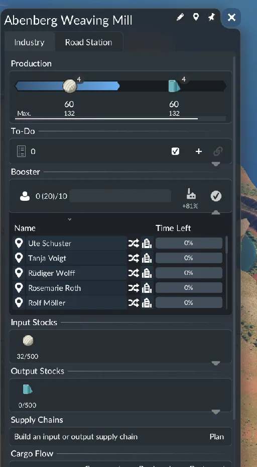
Industry Enhancements
Correct figures for industries with two recipes, every worker, what they are doing and where they come from, plot growth, and columns for comparing industries.
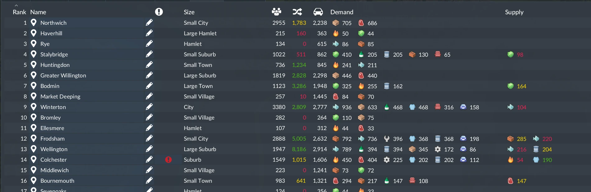
Statistics Enhancements
Rank, sort and a cargo filter in every table; town, vehicle and station columns; industry totals and problem marks; red problem buttons.

Warehouse Enhancements
What each warehouse slot really holds, and which cargo fills up next.
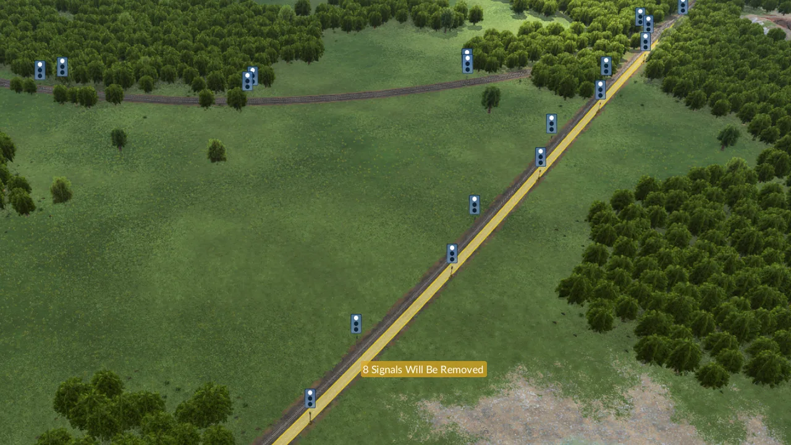
Signal Enhancements
Repeat one-way signals at a set spacing; Shift + bulldoze removes a whole stretch.

Vehicle Enhancements
The store's table: running cost, wagon weight and length, figures against the vehicle replaced.
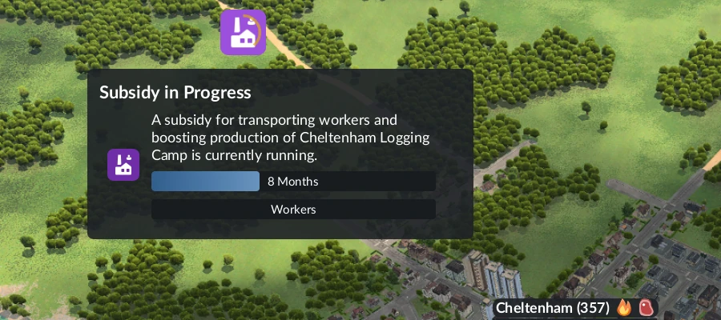
Subsidy Enhancements
How long an offer stays open, how long a reward runs, rings coloured by phase.

Company Enhancements
Population reached and needed for the next rank, and its change over 30 days.

To-Do List
A to-do list per save, with tasks linked to towns, industries, lines and more.
Tools
For players who run many mods: performance figures and a stutter fix.
Bug fixes
Work-arounds for game bugs, each removable once the game is fixed.

Bug Fix - Crosswalk Queue
Pedestrians stuck at traffic lights for months: nudges the light so they cross.
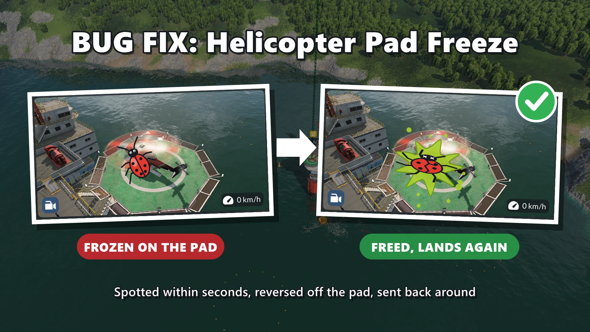
Bug Fix - Helicopter Pad Freeze
Frees helicopters frozen on a one-pad helipad, with a pop-up.
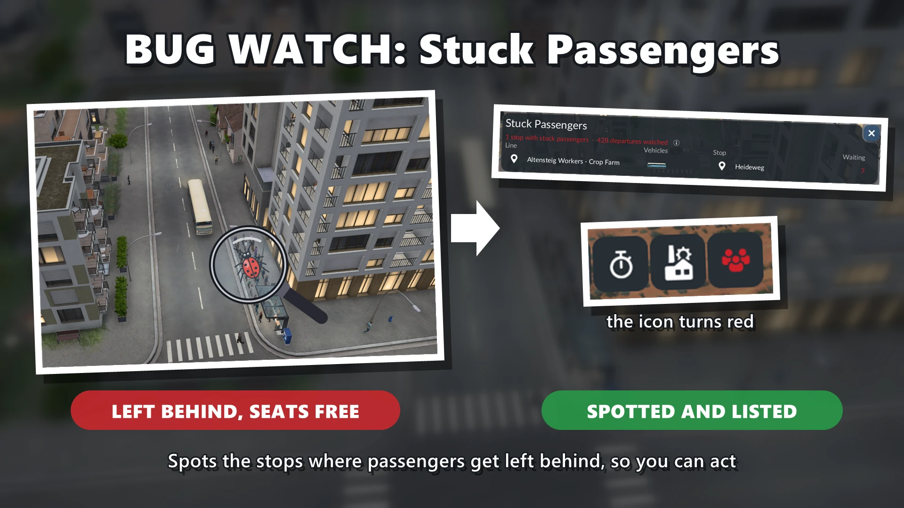
Bug Watch - Stuck Passengers
Passengers left behind with seats free: a red icon lists the stops.

Bug Fix - Comfort Bar
A train's Comfort bar no longer counts the locomotive as zero comfort.
Find it in the game
Open a window, see what the mods add there.
Line Manager
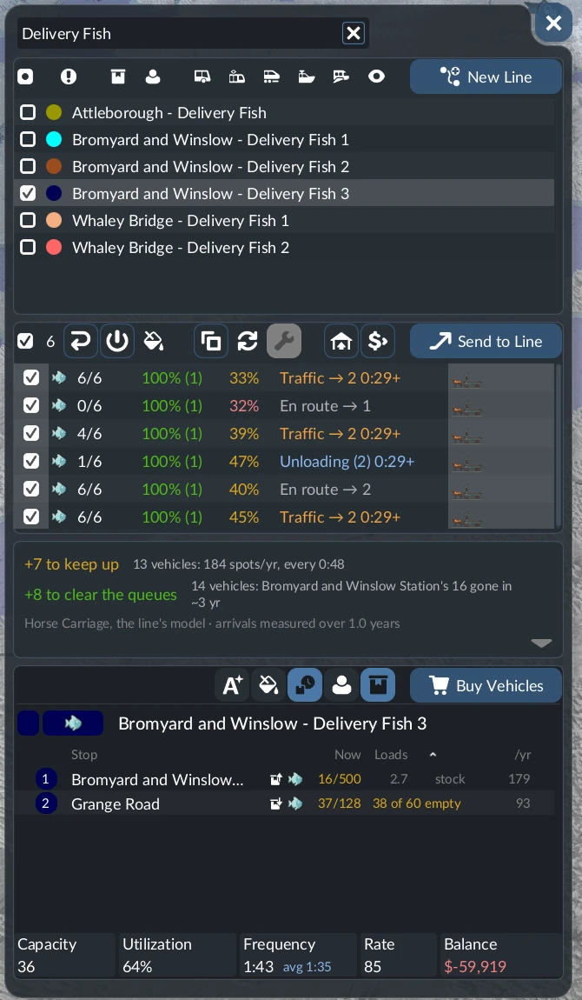
- 1Line Enhancements
- 1ASelected Vehicle CountBeside the select-all box: how many vehicles are selected.
- 1BSend to Line Remembers FilterSend to Line opens with Show Only Visible Lines as you last left it.
- 1CVehicle Load and StatusEach vehicle's load, its fullest departure, its average fill and what it is doing now.
- 1DVehicles NeededVehicles Needed: 7 more to keep up with what arrives, 8 to clear the queues. Open the card for a what-if.
- 1EStop Figures · Toggle Passengers on All Stops · Remove Cargo from All StopsAction bar toggles: the stop list as figures, passengers on or off at every stop, cargo off every stop.
- 1FStop FiguresStop figures: what waits now, how many loads that is, and what each stop picks up a year.
- 1GLine TimingFrequency with its average over recent loops.
Stop Window

- 1Line Enhancements
- 1ADistribute DeliveryDistribute Delivery in the Load card: point at it for the plan, click to give the stops after this one decreasing fill levels.
- 1BDistribute DeliveryFish 100 %: vehicles leave this stop full; the stops after it get the smaller levels.
Auto-Rename

- 1Line Enhancements
- 1ADestination - Cargo NamesFirst suggestion: the place the line delivers to and the cargo.
World View

- 1Line Enhancements
- 1ACargo DemandBlue pins: buildings taking meat that the pointed-at station reaches.
- 1BCargo DemandRed ?: a building taking meat that no stop of the line reaches.
- 1CCargo DemandDistrict chip: what its reached buildings store against what they can take, +n not reached.
- 1DCargo DemandThe add stop tooltip sums up what this station would reach.
- 1EStation Catchment on HoverOrange lots: the buildings in reach of the stop you point at.
- 1FDistrict Colors in Line ManagerGreen, blue and yellow buildings: residential, commercial and industrial districts, in every Line Manager view.
World View: Air Line

- 1Line Enhancements
- 1ADescent ZonesThe blue strip along the runway's approach line: a last waypoint on it is kept.
- 1BDescent ZonesA waypoint the planes skip, marked red.
- 1CDescent ZonesThe straight paths planes fly once they descend, for the earliest and the latest start.
- 1DDescent ZonesWhere those paths start.
- 1EDescent ZonesThe edge of the descent circle: inside it, planes skip the waypoints left.
Line Window
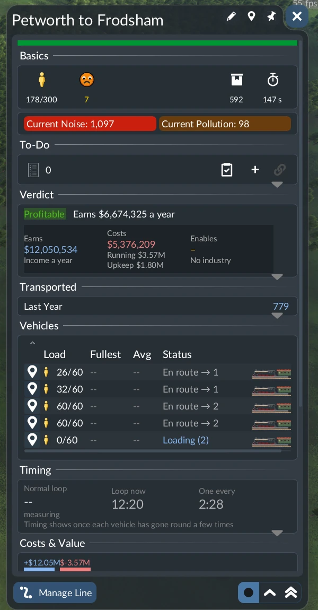
- 1To-Do List
- 1ATo-Do in WindowsTo-Do card: open tasks about this line, + for a new one.
- 2Line Enhancements
- 2ALine Cost CardsVerdict card: whether the line earns or loses money a year once all upkeep is counted, and why.
- 2BVehicle Load and StatusVehicles card: each vehicle's load, fullest and average departure, and what it is doing now.
- 2CLine TimingTiming card: the normal loop against the loop now, and what slows the line.
- 2DLine Cost CardsCosts & Value card: income against every cost, and what removing the line would change.
- 2EManage Line ButtonsLine Manager icon at the bottom left: opens the Line Manager on this line.
Station Window
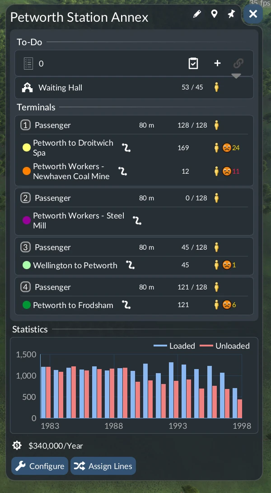
- 1To-Do List
- 1ATo-Do in WindowsTo-Do card: open tasks about this station, + for a new one.
- 2Line Enhancements
- 2AManage Line ButtonsLine Manager icon beside each line's name: opens the Line Manager on that line.
- 2BAssign LinesAssign Lines, next to Configure: opens the window in the next tab.
Assign Lines
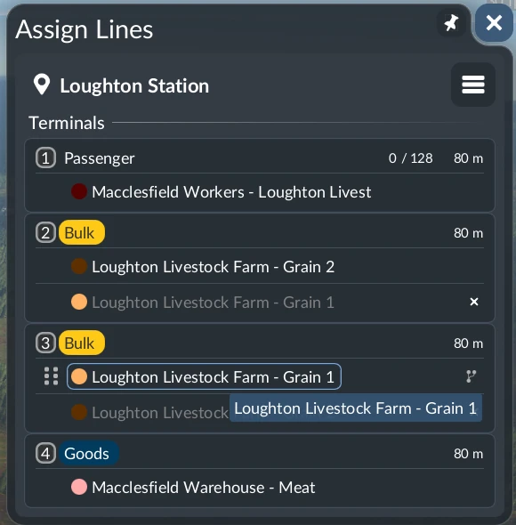
- 1Line Enhancements
- 1AAssign LinesSwitches between this list and a grid.
- 1BAssign LinesA card per terminal, with its type and length, the lines that prefer it first.
- 1CAssign LinesAn alternative, greyed under the separator; the ✕ removes it.
- 1DAssign LinesDrag a line by its grip to another terminal to make that its preferred one.
- 1EAssign LinesDrag this handle to another terminal to add it as an alternative.
Industry Window
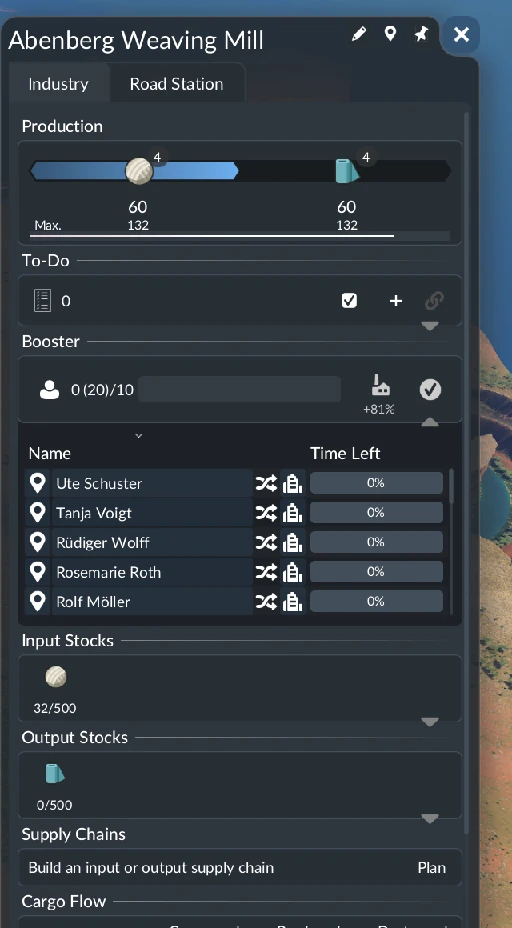
- 1Industry Enhancements
- 1ARecipe FiguresProduction: each recipe row its own figures, not the first recipe's.
- 1BWorker StatusBoosters: every worker counted, not only those who came by line.
- 1CWorker StatusWorker list: who works here; the Boosters tab shows it in full.
- 2To-Do List
- 2ATo-Do in WindowsTo-Do card: open tasks about this industry, + for a new one.
- 3Cargo Enhancements
- 3ACargo FilterInput and Output Stocks: open a card for its cargo filter, slider and Distance column (Output Stocks tab).
- 3BSupply Chain PlannerSupply Chains: opens the supply chain planner on this industry.
Production

- 1Industry Enhancements
- 1APlot GrowthPlots built of the most this farm may have: 18 of 19.
- 1BPlot GrowthThe next try to add a plot, in 3 months; grey because the farm is blocked.
- 1CPlot GrowthThe chance: 100 % production × 39 % shipped gives 28 %.
Boosters

- 1Industry Enhancements
- 1AWorker Status16 (10)/10: 16 came by line and count for the boost, 10 more work here, 10 are needed.
- 1BWorker Status126 days waiting, in red: past 30 days the wait makes people unhappy.
- 1CWorker StatusThe line, the stop and where the worker gets off.
Output Stocks

- 1Cargo Enhancements
- 1ACargo FilterCargo buttons: the table and the map's arrows show only the picked cargo.
- 1BProducing FilterFactory toggle: hides takers that make nothing with it.
- 1CDistance SliderSlider: hides takers farther than 6.0 km, in the table and on the map.
- 1DDistance Column · Supplier Table SortDistance to each taker; the first click on a header sorts nearest first (amounts largest first).
World View

- 1Industry Enhancements
- 1AWorker SourcesBlue arrows: towns that send workers here now.
- 1BWorker SourcesWhite arrows: nearby towns that could send workers but don't now.
To-Do
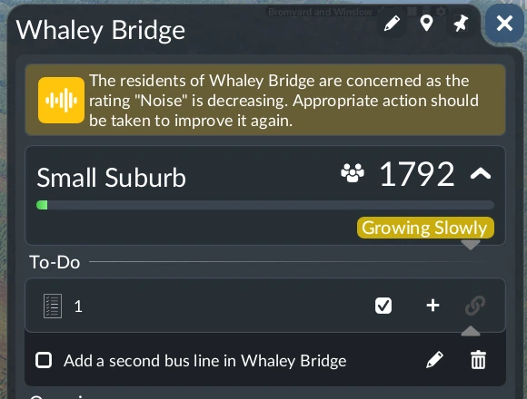
- 1To-Do List
- 1ATo-Do in WindowsOpen tasks about this town; a click opens them in the list.
- 1BTo-Do in WindowsAdds the tasks already done to the card.
- 1CTo-Do in Windows+ starts a new task about this town.
- 1DTo-Do in WindowsThe chain links the town to the task picked in the To-Do window.
- 1ETo-Do in WindowsThe tasks about it: tick, edit or delete them here.
Supplies
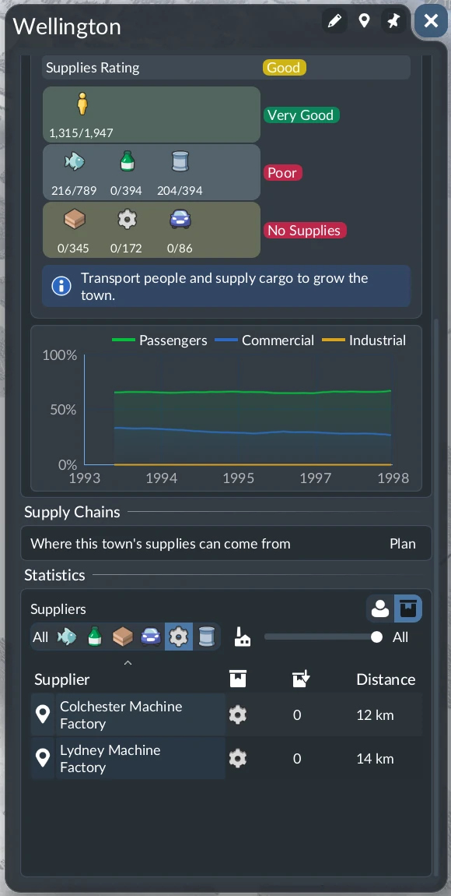
- 1Cargo Enhancements
- 1ASupply Chain PlannerSupply Chains card: Plan opens the supply chain planner on this town.
- 1BTown Supply FilterCargo buttons: pick a cargo to see where it can come from; the map's arrows follow.
- 1CProducing FilterFactory toggle: hides suppliers that made nothing last year.
- 1DDistance SliderSlider: hides suppliers farther away, in the table and on the map.
- 1EDistance Column · Supplier Table SortDistance to each supplier; the first click on a header sorts nearest first.
Warehouse Window
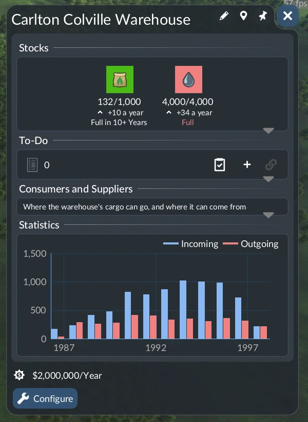
- 1Warehouse Enhancements
- 1AWarehouse Stocks CardStocks card: per cargo the room left, its change a year and when it is full.
- 2To-Do List
- 2ATo-Do in WindowsTo-Do card: open tasks about this warehouse, + for a new one.
- 3Cargo Enhancements
- 3AWarehouse Consumers and SuppliersConsumers and Suppliers card: where the warehouse's cargo can go and come from.
Stocks Card

- 1Warehouse Enhancements
- 1AWarehouse Stocks CardEach kind counts its free slots and names the cargo a held slot waits for.
- 1BWarehouse Stocks CardA slot's bar: green while a line unloads its cargo here, grey when none does, red once full.
- 1CWarehouse Stocks CardThe lines that unload (arrow down) or load (arrow up) here; click one to open it.
Consumers and Suppliers
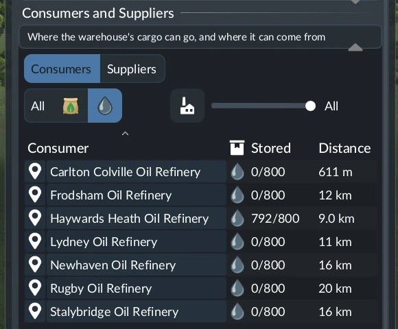
- 1Cargo Enhancements
- 1AWarehouse Consumers and SuppliersConsumers: where the stored cargo can go. Suppliers: where more of it can come from.
- 1BWarehouse Consumers and SuppliersCrude oil picked: the oil refineries that could take it, and what they already store.
- 1CProducing FilterFactory toggle: hides takers that make nothing.
- 1DDistance SliderSlider: hides the farther ones.
- 1EDistance Column · Supplier Table SortDistance; the first click on a header sorts nearest first.
Vehicle Window
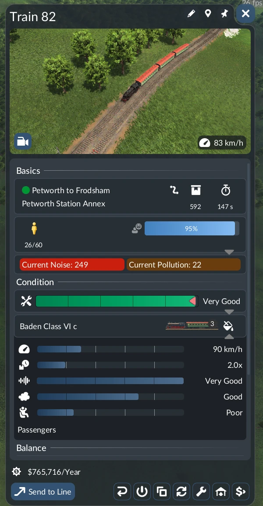
- 1Line Enhancements
- 1AManage Line ButtonsLine Manager icon beside the line's name: opens the Line Manager on that line.
- 1BSend to Line Remembers FilterSend to Line: the popover opens with Show Only Visible Lines as you last left it.
- 2Bug Fix - Comfort Bar
- 2AFix Comfort BarComfort row: a locomotive-hauled passenger train in good condition no longer shows a false red part.
Vehicle Store
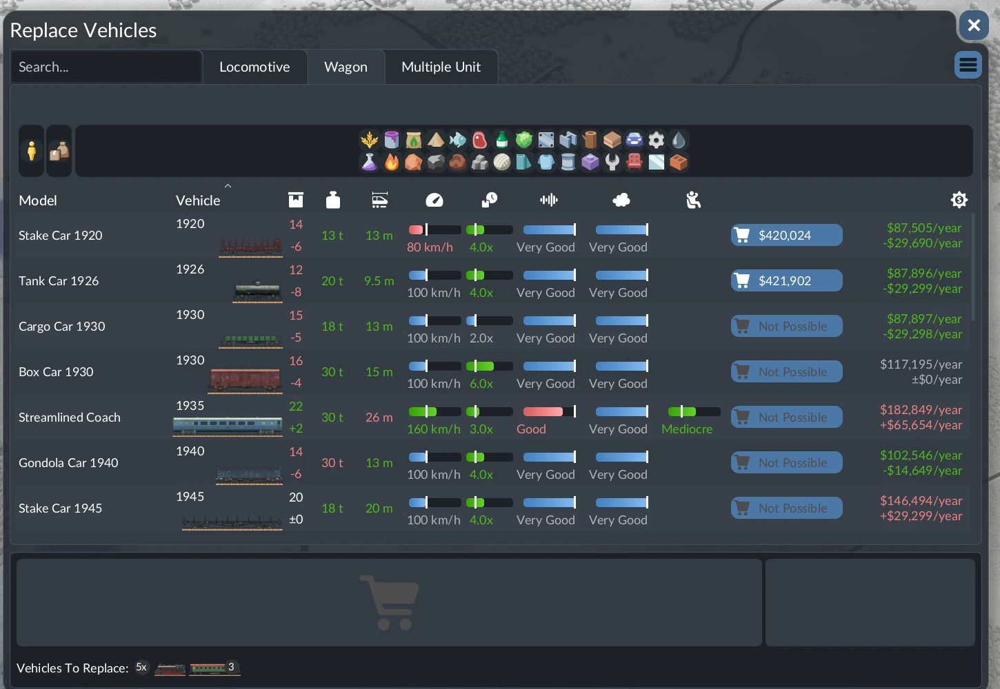
- 1Vehicle Enhancements
- 1AWagon Weight and LengthTwo columns after capacity: each wagon's weight and length.
- 1BReplace ComparisonGreen and red figures and bars: better or worse than the vehicle you replace.
- 1CRunning Cost ColumnColumn after the buy button: each vehicle's running cost a year.
Industries
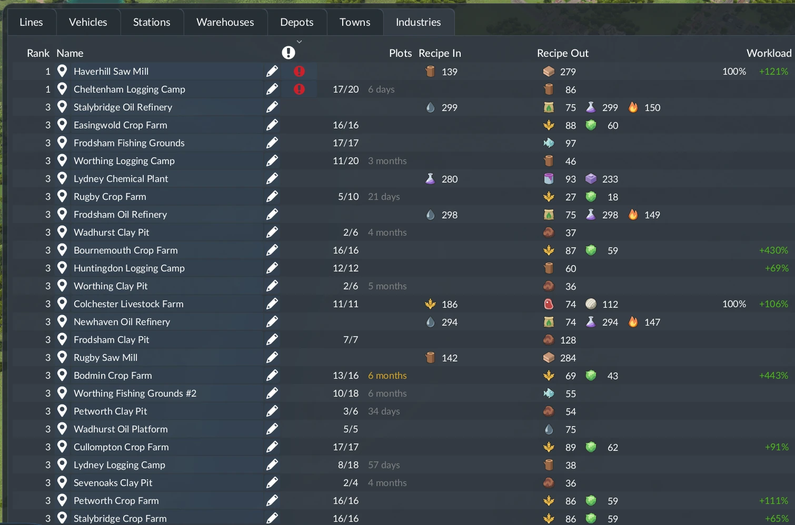
- 1Statistics Enhancements
- 1ARank ColumnRank: each row's place in the current order; rows that tie share a place. Every tab has it.
- 1BSort Largest First · Scroll to Top on SortThe first click on a header sorts largest first (names A to Z) and shows the table from its first row.
- 1CIndustry - Problem MarksProblems: industries blocked from expanding, or destroying cargo they ship too slowly. Click a mark to open the industry.
- 2Industry Enhancements
- 2AStatistics - Column EnhancementsPlots: built of the most allowed, then the next try to grow.
- 2BStatistics - Column EnhancementsRecipe In and Recipe Out: each cargo a year at the recipe's base rate.
- 2CStatistics - Column EnhancementsWorkload, with the boosts on now in green.
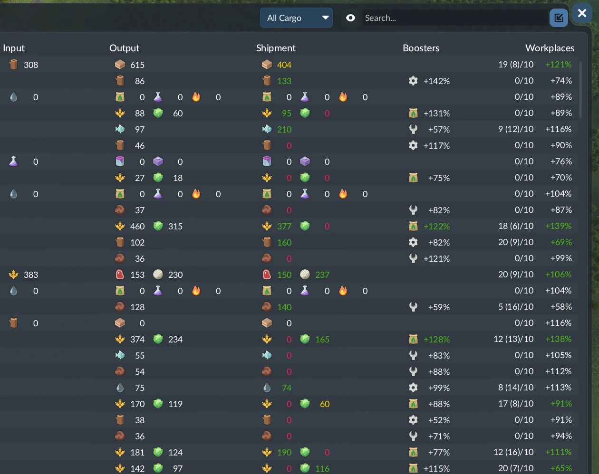
- 1Statistics Enhancements
- 1ACargo Filter in the Industries tab · Cargo Filter in the Towns tabCargo list: only the industries (or, in the Towns tab, the towns) that need, boost with or make the picked cargo.
- 1BIndustry - Recipe TotalsInput and Output: each cargo counted once for industries with several recipes.
- 2Industry Enhancements
- 2AStatistics - Column EnhancementsShipment per cargo, coloured by the share of last year's production shipped.
- 2BStatistics - Column EnhancementsBoosters: how much faster each cargo booster makes production, green while on.
- 2CWorker StatusWorkplaces: workers who came by line (others working here) / needed, then the worker boost.
Towns
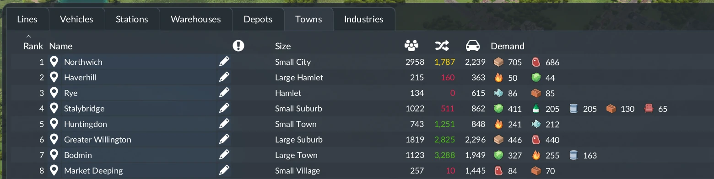
- 1Statistics Enhancements
- 1APublic Transport CoveragePublic Transport: the game's number, coloured by the town's public transport coverage.
- 1BCargo Demand and SupplyDemand: each cargo the town wants, with its amount, largest first.
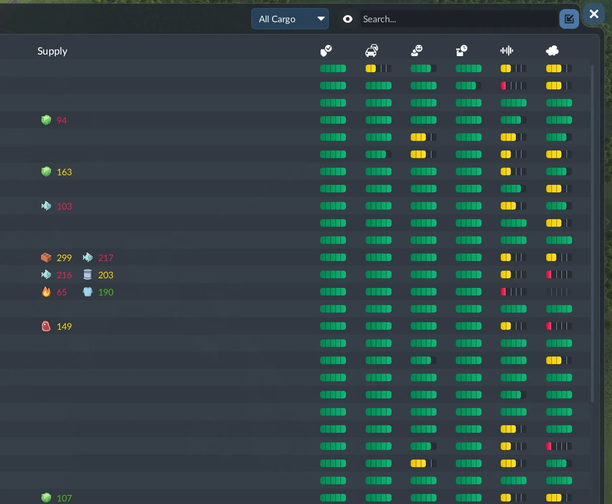
- 1Statistics Enhancements
- 1ACargo Demand and SupplySupply per cargo, coloured by the share of its demand met.
- 1BSort Largest FirstThe rating gauges sort worst first on the first click.
Lines
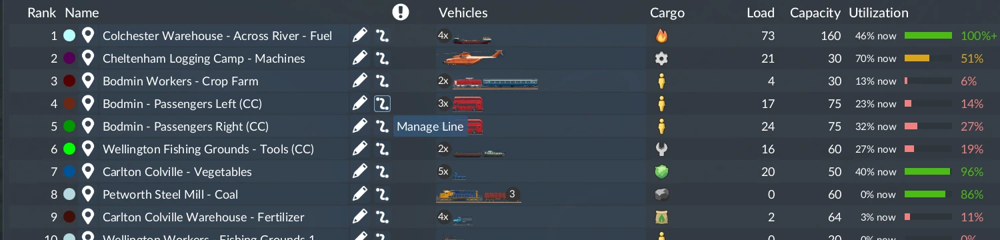
- 1Line Enhancements
- 1AManage Line ButtonsLine Manager icon beside each line's name: opens the Line Manager on it.
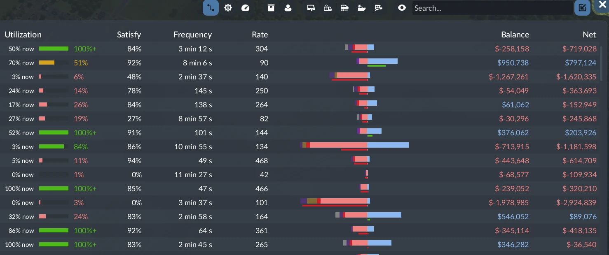
- 1Line Enhancements
- 1AStatistics - Cost ViewsThe three views: Lines, Costs and Track.
- 1BStatistics - Cost ViewsThe load now, then last year's use as a bar.
- 1CStatistics - Cost ViewsThe profit bar: income to the right, each cost to the left, the net as a line under it.
- 1DStatistics - Cost ViewsNet: the Balance less the line's share of upkeep.
Stations
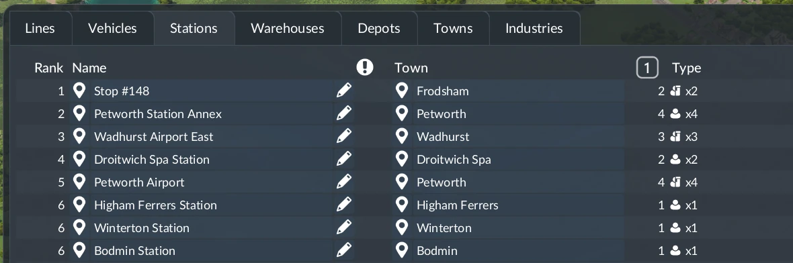
- 1Statistics Enhancements
- 1AStation - Column EnhancementsThe terminal count, and Type: how many terminals of each kind.
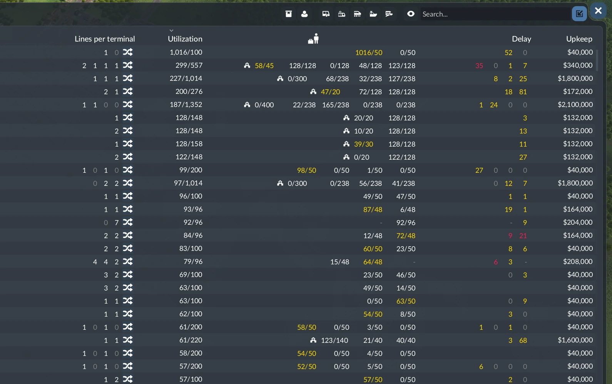
- 1Statistics Enhancements
- 1AStation - Column EnhancementsHow many of your lines stop at each terminal.
- 1BStation - Column EnhancementsThe waiting hall, then each terminal's waiting passengers against its capacity; yellow when over.
- 1CStation - Column EnhancementsDelay: the unhappy passengers at each terminal.
- 2Line Enhancements
- 2AAssign LinesAssign Lines for the station, from its row.
Vehicles
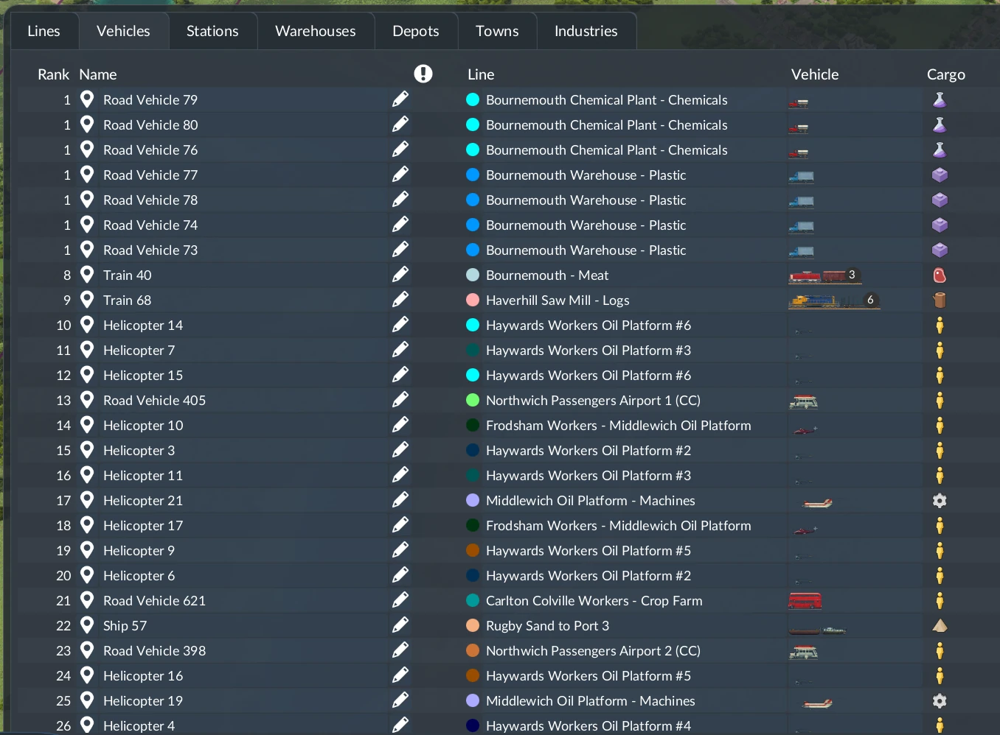
- 1Statistics Enhancements
- 1AVehicle - Column EnhancementsLine first, with more room for its name.
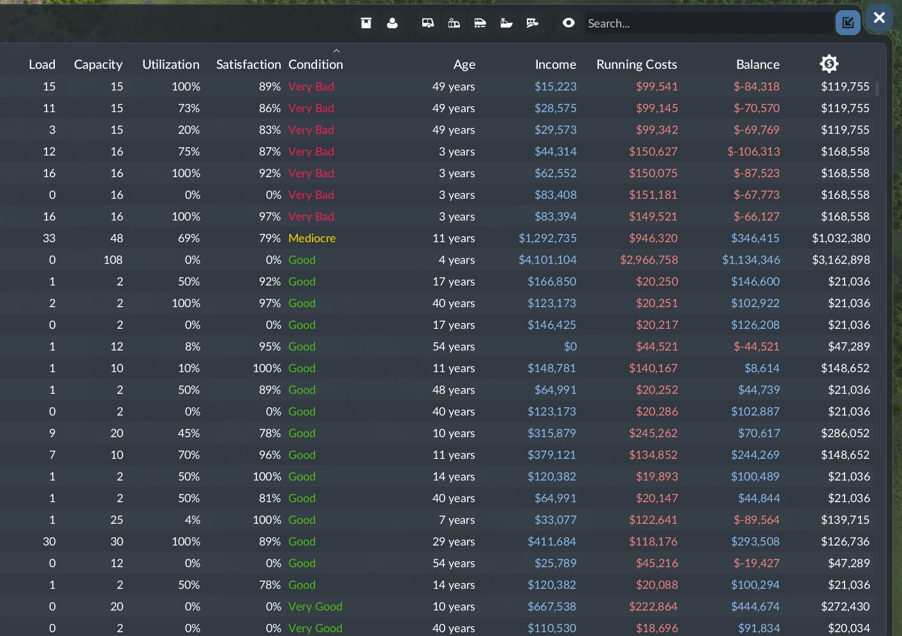
- 1Statistics Enhancements
- 1AVehicle - Column EnhancementsCondition in the vehicle window's colours.
- 1BVehicle - Column EnhancementsIncome and Running Costs over the last 12 months, before Balance.
- 1CVehicle - Column EnhancementsThe running cost a year at today's rate.
Warehouses
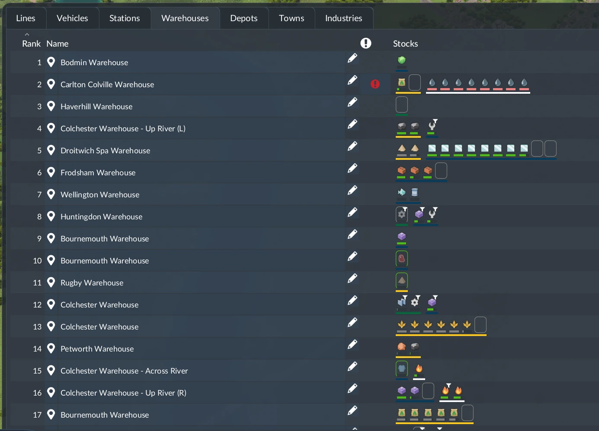
- 1Warehouse Enhancements
- 1AStatistics - Slot ColumnsA tile per slot, grouped by kind; green bars where a line unloads that cargo now.
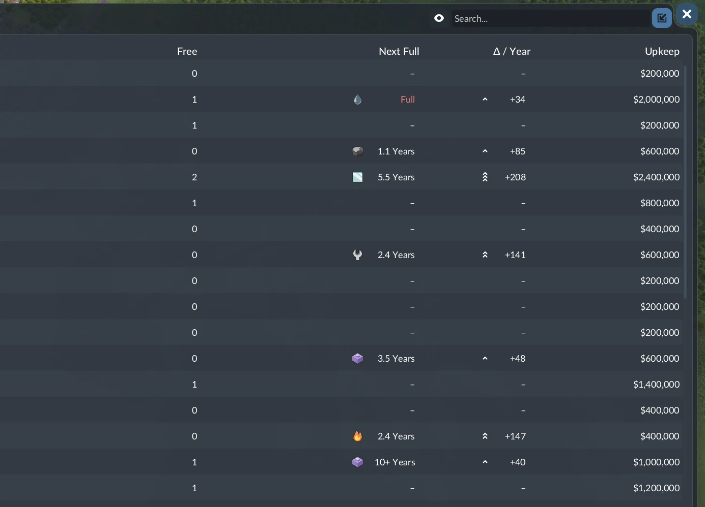
- 1Warehouse Enhancements
- 1AStatistics - Slot ColumnsFree: slots no cargo is held for.
- 1BStatistics - Slot ColumnsNext Full: the cargo to act on first, and when it fills.
- 1CStatistics - Slot ColumnsThat cargo's change over the last year.
Subsidy Windows
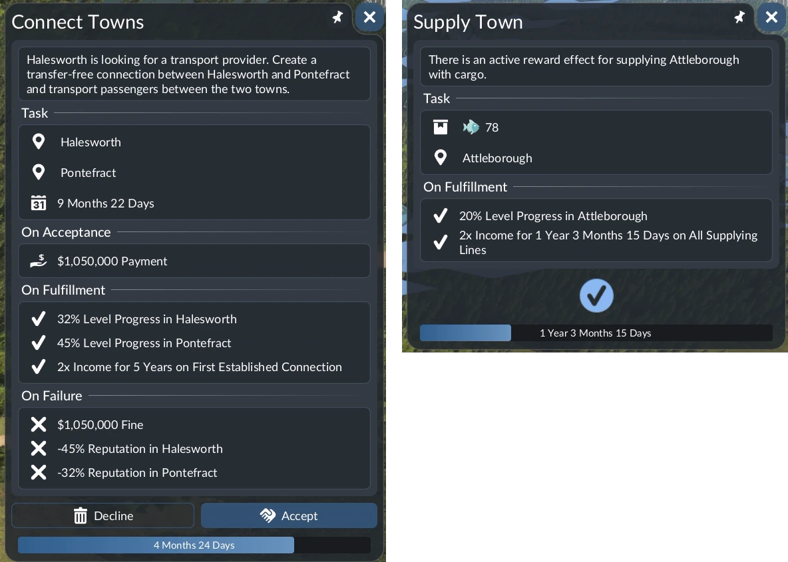
- 1Subsidy Enhancements
- 1AOffer CountdownBar under Decline and Accept: the time left to accept the offer; the date above it is the time to fulfil it once accepted.
- 1BReward CountdownBar under the reward text: how long the reward effect has left, here 2x income on the supplying lines.
Notifications
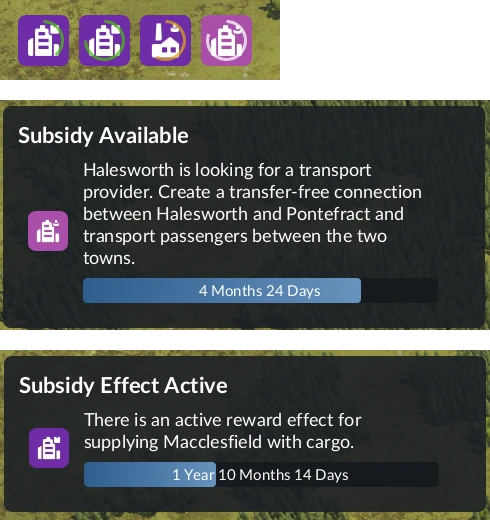
- 1Subsidy Enhancements
- 1ASubsidy Ring ColorsRing on each subsidy tile: yellow while in progress, green while its reward runs, white for an open offer.
- 1BOffer CountdownSubsidy Available: the bar shows how long you have left to accept.
- 1CReward CountdownSubsidy Effect Active: the bar shows how long the reward has left.
Counters
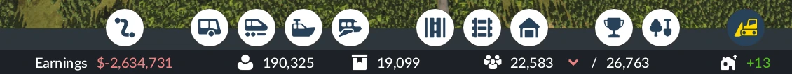
- 1Company Enhancements
- 1APopulation CounterThe population your company has reached against what the next rank needs; a red arrow while today's is lower.
- 1BPopulation ChangeHow much the world's population grew over 30 days, updated weekly.
Population Tooltip

- 1Company Enhancements
- 1APopulation CounterThe tooltip adds the progress to the next rank and today's population.
Statistics Buttons
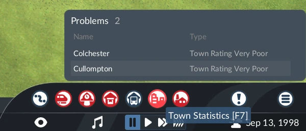
- 1Statistics Enhancements
- 1AProblem ButtonsRed: that table has something to look at, here Vehicles, Stations, Warehouses, Towns and Industries.
- 1BProblem ButtonsRest the pointer on a red button: a box lists what is wrong, with the notification's type.
- 1CProblem ButtonsThe pin before a name looks at it on the map; click the name to open its window.
Buttons

- 1To-Do List
- 1ATo-Do ListChecklist button: your notes for this save.
- 2Mod Performance Monitor
- 2AMonitorStopwatch button: what each mod costs per frame.
- 3Cargo Enhancements
- 3ASupply Chain PlannerPlanner button: opens the supply chain planner on the town or industry it last showed.
- 4Bug Watch - Stuck Passengers
- 4AStuck Passenger AlertTurns red when passengers are left behind at a stop.
To-Do List
- 1To-Do List
- 1ATo-Do in WindowsFilter buttons, one per kind of element, and the eye: only the tasks about something on screen.
- 1BTo-Do List+ adds a task at the top.
- 1CTo-Do ListDrag a task by its grip to reorder it; tick it when it's done.
- 1DTo-Do ListEdit or delete a task.
- 1ETo-Do in WindowsA tag links the task to a town, station or line: click it to go there and open its window.
Mod Performance
- 1Mod Performance Monitor
- 1AMonitorFrames a second and ms each, and what all mods together take of that.
- 1BMonitorThe game speed: game time per real second while the game runs.
- 1CGame Script TimingThe simulation's timings, with the mods' game scripts' share.
- 1DMonitor · Game Script TimingA row per mod, heaviest first: UI time per frame, its worst frame, calls, and game script time (Sim).
Supply Chain Planner
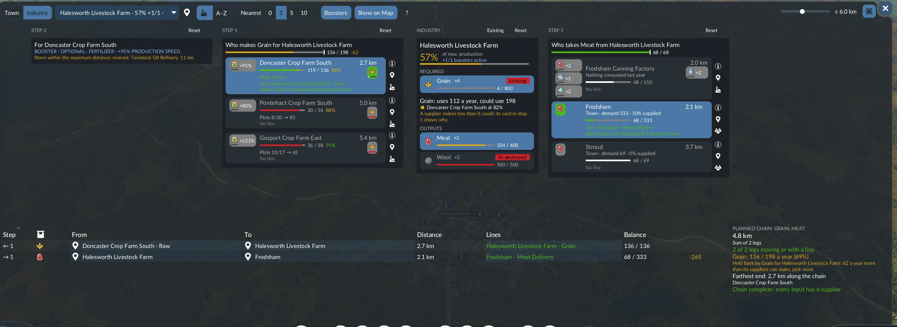
- 1Cargo Enhancements
- 1ASupply Chain PlannerThe industry you plan for, in the middle, with what limits it.
- 1BSupply Chain PlannerWho makes grain, nearest first; the picked supplier in blue, your line serving it in green.
- 1CSupply Chain PlannerWho takes the meat: a town 2.1 km away, picked and already served by your line.
- 1DSupply Chain PlannerThe planned legs with distance, lines and balance, and what holds the chain back.
Stuck Passengers
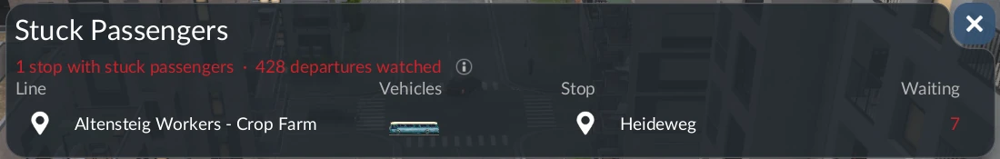
- 1Bug Watch - Stuck Passengers
- 1AStuck Passenger AlertHow many line stops have stuck passengers, and how many departures were watched.
- 1BStuck Passenger AlertThe line and its vehicles: clicks open the line or the Line Manager.
- 1CStuck Passenger AlertThe stop where they are stuck, and how many wait there.
Path Signal Tool
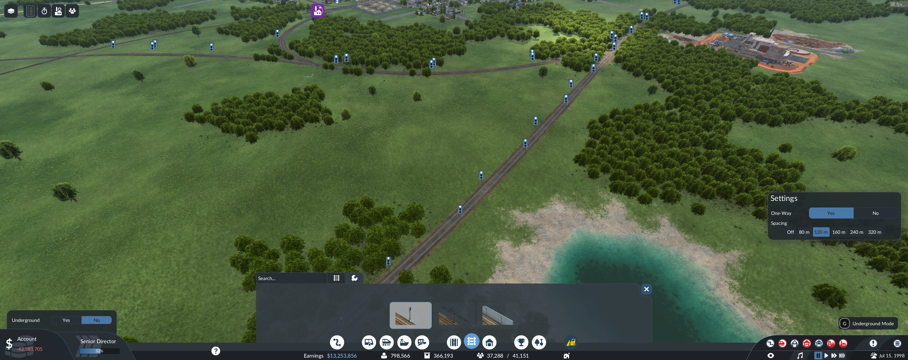
- 1Signal Enhancements
- 1ASignal SpacingThe tool's Settings panel: One-Way Yes and a spacing, Off or 80 to 320 m.
- 1BSignal SpacingOne-way signals the mod placed along the straight, one every chosen distance.
- 1CSignal SpacingThe run ends where the track reaches a switch.
Bulldozer

- 1Signal Enhancements
- 1AShift + Bulldoze Signal StretchWith Shift held, the whole stretch out to the switch turns yellow.
- 1BShift + Bulldoze Signal StretchThe label counts the signals that go: 8 here.
- 1CShift + Bulldoze Signal StretchThe game's Shift hint lights up while Shift is held.
- Hitch Log · Mod Performance Monitor
Writes each hitch to the game log with the mods that took the most of it. - Map Check Interval · Better Minimap Stutter Fix
Makes that check run every 30 seconds instead: 10, 30 or 60 seconds, or Better Minimap's own 2 seconds, in the mod's Settings. - Refresh After Building · Better Minimap Stutter Fix
Better Minimap checks the map once you stop building or bulldozing for a moment, so it shows your own changes. - Unstick Crosswalks · Bug Fix - Crosswalk Queue
Finds crossings where pedestrians are stuck and nudges the light so they cross. - Free Frozen Helicopters · Bug Fix - Helicopter Pad Freeze
The mod spots a frozen helicopter within seconds and does what the Reverse ("previous station") button does by hand: it reverses the helicopter off the pad and, once it is clear, reverses it again until it heads back for the same stop.
Research
Pedestrians who never cross
At signalised crossings in every town of a test map, the walk phase stopped coming on while crowds waited, some for months. Reported with figures from a watch tool, and worked around.
Passengers who never board
Passengers who queue at an overcrowded stop are never picked up afterwards: buses of their line leave with seats free while they keep waiting.
Helicopters frozen on the pad
Traced landing by landing: a helicopter that hovers low while waiting for a one-pad helipad sinks onto the deck and never arrives, blocking the pad for every other helicopter.
Planes that skip waypoints
Where a plane's descent replaces its planned route with a straight-in approach, dropping the waypoints still ahead, and where a last waypoint survives.